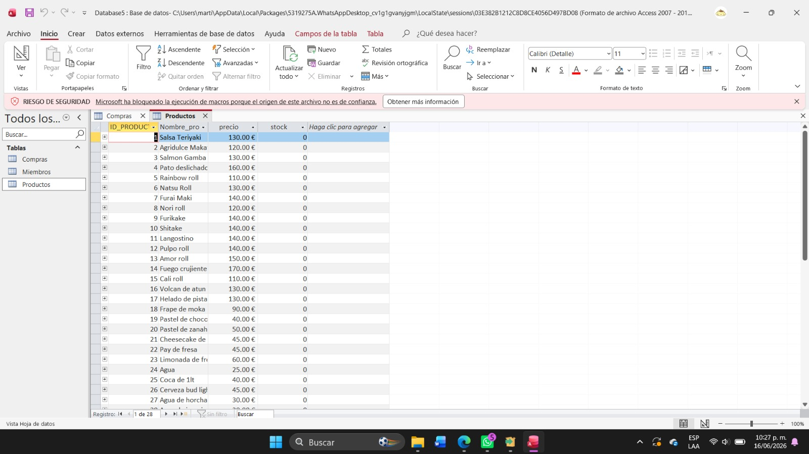
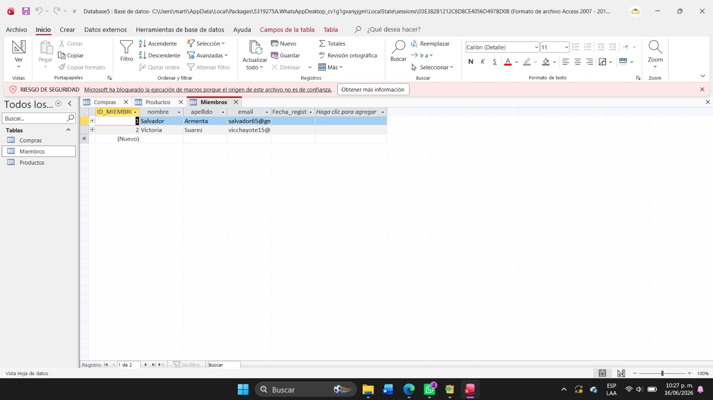

Práctica 12
Creación de Base de Datos - Sentencias


¿Qué hice?
En esta práctica creé una base de datos en Microsoft Access...
Comandos y herramientas utilizadas
- Crear tablas en Vista Diseño.
- Crear claves primarias.
- Crear claves foráneas.
- Herramienta Relaciones.
- Opción Exigir Integridad Referencial.
- Diseño de Consulta.
- Ejecutar consulta (!).